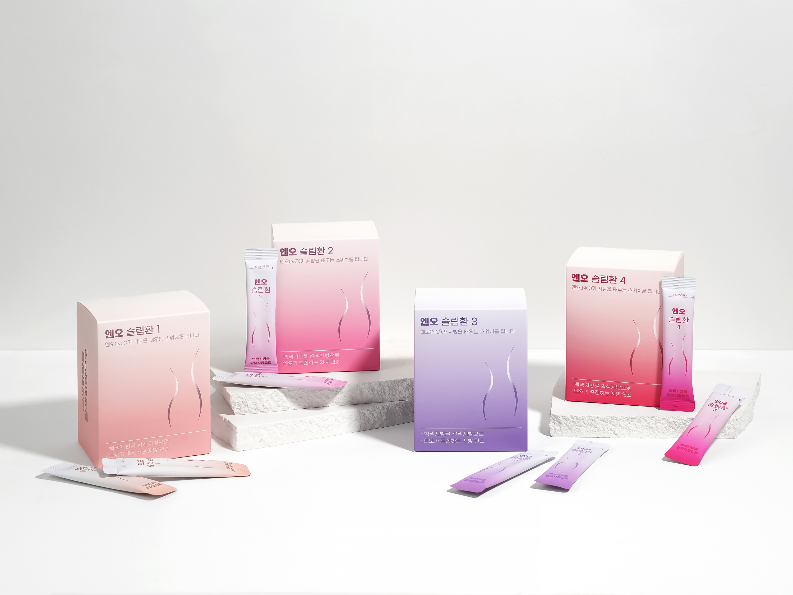
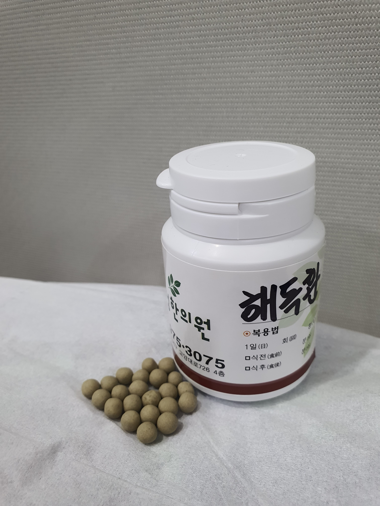

백색지방을 갈색지방으로 전환시키는 산화질소작용을 응용하여
개인별 대사를 돕는 한약 처방을 통해
몸속 노폐물 배출을 돕고 건강하게 가벼워진 몸을 되찾아 드립니다.
억지로 굶는 무리한 다이어트는 지양합니다. 자연스러운 포만감을 형성하여 스트레스가 적은 식단 관리를 돕습니다.
저하된 기초대사량을 끌어올려 에너지 소모를 돕고, 체내에 쌓인 불필요한 노폐물 배출을 촉진합니다.
"대사를 돕고 에너지를 활성화하는 맞춤 다이어트 한약"

1개월분 : 15만 원
3개월분 : 45만 원
"다이어트의 시작, 장 환경 개선부터 돕습니다"

본격적인 감량 전, 위장의 부담을 줄이고 노폐물을 배출하여 다이어트 한약이 잘 흡수될 수 있는 환경을 만듭니다.
개인 체질에 맞춘 엔오슬림환을 복용하며, 식이 조절과 대사 증진을 통해 목표 체중을 향해 집중적으로 감량하는 시기입니다.
감량된 체중에 몸이 적응하도록 돕는 단계입니다. 복용 횟수와 강도를 서서히 줄여가며 요요 현상을 최소화합니다.
네, 가능합니다. 원장님과의 꼼꼼한 전화 진료를 통해 환자분의 체질, 병력, 평소 식습관 등을 상세히 확인한 후, 개인에게 맞춘 다이어트 환약을 안전하게 택배 발송해 드립니다.
엔오슬림환은 기초대사량을 끌어올려 에너지 소모를 돕는 원리입니다. 약 복용만으로도 대사 촉진에 도움을 줄 수 있으나, 가벼운 유산소 운동과 올바른 식이요법을 병행하시면 더욱 건강하고 체계적인 감량 효과를 기대하실 수 있습니다.
기초 대사량이 올라가는 과정에서 초기 3~5일 정도 가슴 두근거림, 손떨림, 땀 분비 증가, 불면이나 입마름 등의 증상이 나타날 수 있습니다. 이는 평소보다 에너지를 많이 소모하며 나타나는 반응이나, 불편감이 지속될 경우 원장님과 상담하여 약의 강도나 복용량을 조절해야 합니다.